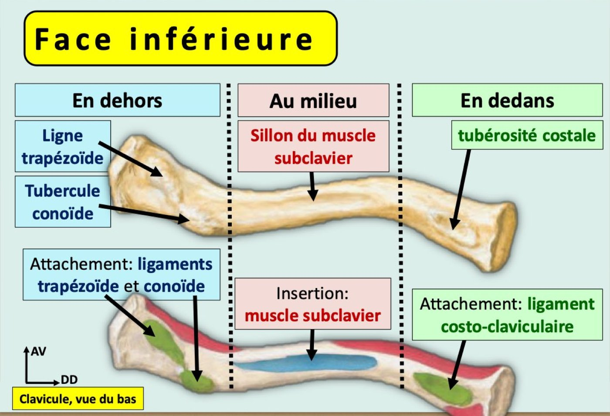
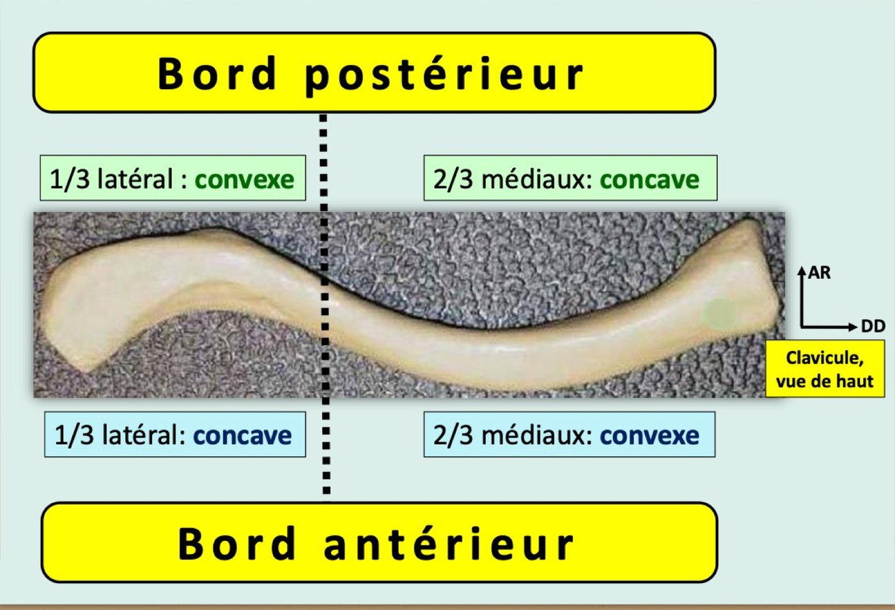
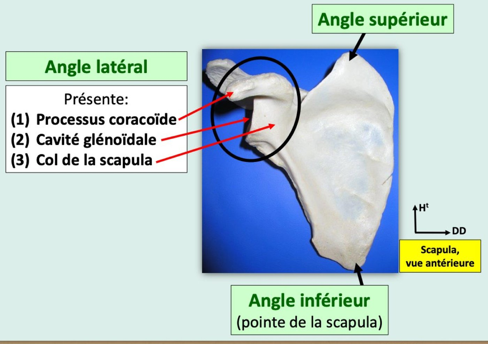
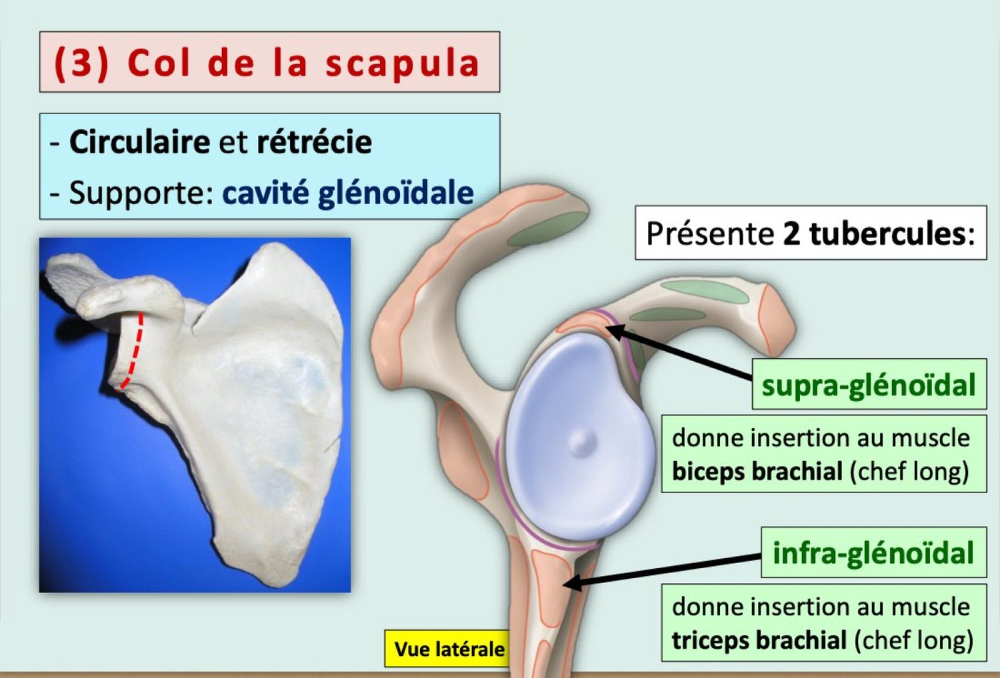
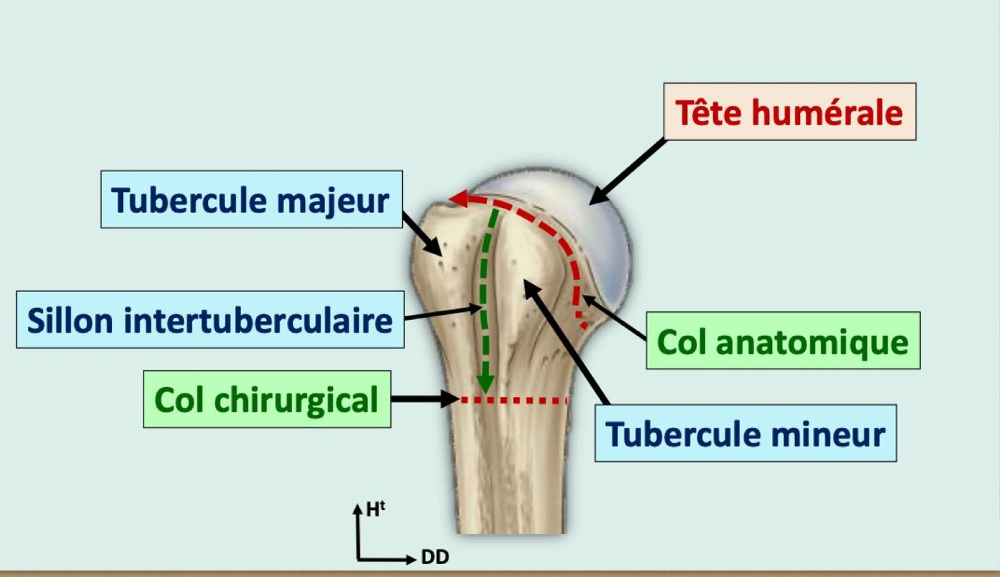
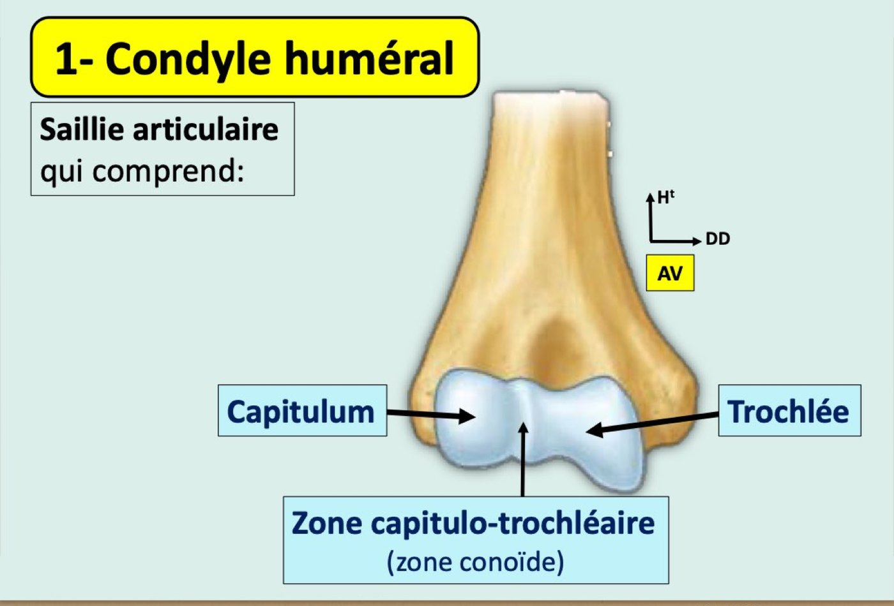
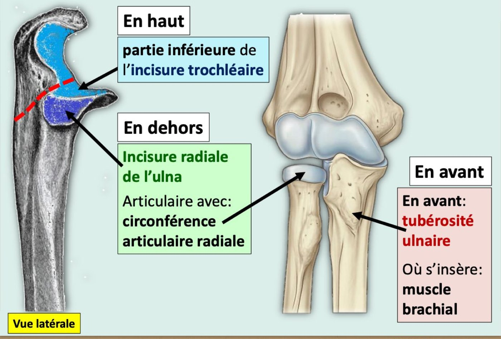
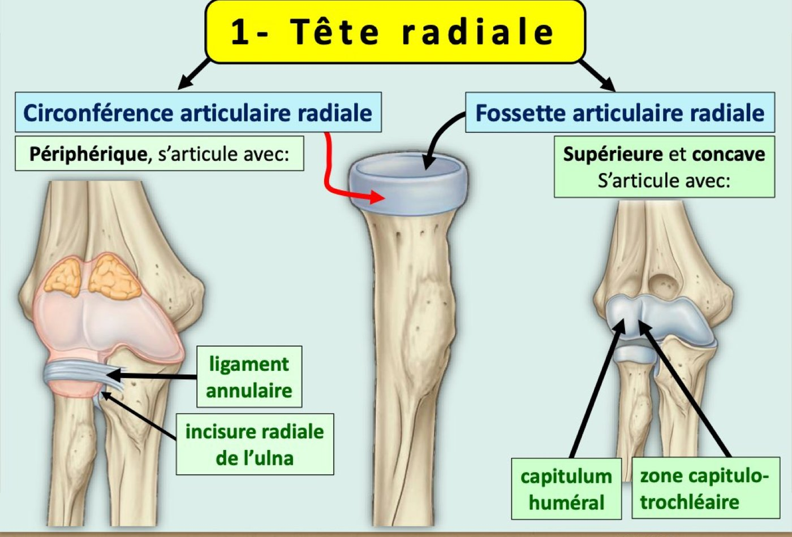
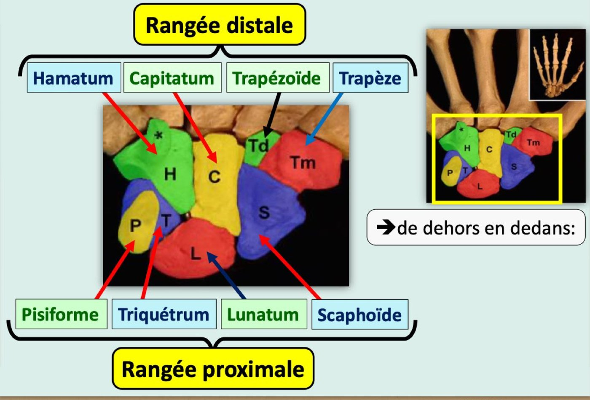

Thoracic limb bones
- Clavicle, inferior surface: costal tuberosity medially (costoclavicular lig.), subclavius groove in the middle, trapezoid line + conoid tubercle laterally. Anterior border: concave lateral 1/3, convex medial 2/3.
- Scapula: projects from the 2nd to the 7th rib. Borders: superior (cervical) with the scapular notch, medial (spinal), lateral (axillary). Lateral angle = coracoid process + glenoid cavity + neck (which carries the glenoid).
- Glenoid neck tubercles: supraglenoid → biceps (long head), infraglenoid → triceps (long head). Coracoid → biceps short head, coracobrachialis, pectoralis minor.
- Humerus: diaphysis projections = crest of the lesser tubercle (latissimus dorsi), deltoid tuberosity, crest of the greater tubercle (pectoralis major). Radial nerve groove on the posterior surface. Condyle: capitulum lateral (→ radial head), trochlea medial (→ ulnar trochlear notch).
- Ulna (medial): olecranon vertical & posterior, coronoid horizontal & anterior; coronoid carries the lower trochlear notch, the radial notch (laterally) and the ulnar tuberosity (brachialis).
- Radius (lateral): head = fovea on top (→ capitulum) + articular circumference around (→ ulna radial notch, annular lig.); radial tuberosity → biceps brachii; medial border = interosseous.
- Carpus lateral → medial: proximal row scaphoid, lunate, triquetrum, pisiform; distal row trapezium, trapezoid, capitate, hamate.
I. Overview p. 1
| Segment | Paired bones |
|---|---|
| Shoulder girdle (attaches the limb to the thorax) | Scapula + clavicle |
| Arm | Humerus |
| Forearm | Radius (lateral) + ulna (medial) |
| Hand | Carpus, metacarpus, phalanges |
II. Clavicle p. 1–2 2023-24 · 2025-26
Long bone shaped like a stretched "S", between the scapula and the sternum. Set up: flattened end lateral; the concave border of that end forward; the surface with a groove downward.
| Part | Features |
|---|---|
| Superior surface | Subcutaneous, palpable |
| Inferior surface 🎯 | Middle: groove of the subclavius muscle (its insertion). Medial: costal tuberosity → costoclavicular ligament. Lateral: trapezoid line and conoid tubercle → trapezoid and conoid ligaments (together = coracoclavicular ligament). |
| Anterior border | Concave in its lateral 1/3, convex in its medial 2/3 |
| Posterior border | Convex in its lateral 1/3, concave in its medial 2/3 |
| Acromial end | Lateral, flattened; acromial articular surface → acromion of the scapula |
| Sternal end | Medial, rounded; sternal articular surface → sternum and 1st costal cartilage |


III. Scapula p. 2 2023-24 · 2024-25 · 2025-26
Flat, triangular, dorsal bone lying against the rib cage; projects onto the 2nd rib above and the 7th rib below; articulates with the humerus and clavicle. Set up: concave face forward; oval articular surface lateral; notched border upward.
| Part | Features |
|---|---|
| Anterior (costal) surface | Excavated = subscapular fossa, crossed by 2–3 oblique ridges → subscapularis |
| Posterior (dorsal) surface | Divided by the scapular spine into supraspinous fossa (→ supraspinatus) and
infraspinous fossa (→ infraspinatus, teres minor, teres major). Spine = triangular bony plate, perpendicular to the posterior surface, extended laterally by the acromion (clavicular articular surface → clavicle). |
| Superior (cervical) border 🎯 | Scapular notch, bridged by the transverse scapular ligament; passage of the suprascapular artery and nerve |
| Medial (spinal) border 🎯 | — |
| Lateral (axillary) border 🎯 | — |
| Superior angle | — |
| Inferior angle | = tip of the scapula |
| Lateral angle 🎯 | 3 structures: coracoid process, glenoid cavity, neck |
Lateral angle in detail 🎯
| Structure | Description |
|---|---|
| Coracoid process | Shaped like a half-flexed finger; insertion of biceps brachii (short head), coracobrachialis, pectoralis minor |
| Glenoid cavity | Oval articular surface, notched in front by the glenoid notch, glenoid tubercle in the centre; articulates with the humeral head |
| Neck of the scapula | Circular, narrowed; supports the glenoid cavity. 2 tubercles: supraglenoid → biceps brachii (long head); infraglenoid → triceps brachii (long head) |


IV. Humerus p. 3–4 2023-24 · 2025-26
Long bone forming alone the arm skeleton; articulates with the scapula above and the forearm bones below. Set up: rounded end up; its articular surface medial; the groove running down that end forward.
Diaphysis — cylindrical above, triangular and flattened below; 3 surfaces, 3 borders 🎯
| Part | Features |
|---|---|
| Anteromedial surface | Crest of the lesser tubercle → latissimus dorsi |
| Anterolateral surface | Deltoid tuberosity (deltoid "V") → deltoid |
| Posterior surface | Crossed by the radial nerve groove (radial nerve; lesion shown on slide p. 58). Triceps: lateral head above the groove, medial head below |
| Anterior border | = crest of the greater tubercle → pectoralis major |
| Medial and lateral borders | — |
Proximal epiphysis — 6 structures
| Structure | Features |
|---|---|
| Humeral head | 1/3 of a sphere, radius 30 mm; articulates with the glenoid cavity |
| Greater tubercle | Large lateral projection |
| Lesser tubercle | Small anterior projection |
| Intertubercular groove | Between the 2 tubercles; covered by the transverse humeral ligament; passage of the biceps long-head tendon |
| Anatomical neck | Separates the head from the 2 tubercles |
| Surgical neck | Separates the proximal epiphysis from the diaphysis; vulnerable to fractures |

Distal epiphysis — flattened, 3 structures 🎯
| Structure | Features |
|---|---|
| Humeral condyle (articular) | 3 surfaces: • Capitulum: rounded lateral projection, not visible from behind, topped by the radial fossa; → radial head • Trochlea: medial pulley, 2 cheeks separated by a groove; topped by the coronoid fossa (front) and olecranon fossa (back); → trochlear notch of the ulna • Capitulo-trochlear (conoid) zone, between them |
| Medial epicondyle | Very developed, palpable; ulnar collateral ligament of the elbow; crossed behind by the ulnar nerve groove |
| Lateral epicondyle | Poorly developed; radial collateral ligament of the elbow |

V.1 Ulna p. 4 2023-24 · 2024-25 · 2025-26
The two forearm bones are joined by the proximal and distal radio-ulnar joints and the antebrachial interosseous membrane.
Medial forearm bone; articulates with the humeral trochlea above, the radius laterally, the radio-ulnar articular disc below. Set up: largest end up; its hook-shaped articular surface forward; the small facet of that end lateral.
| Part | Features |
|---|---|
| Diaphysis | 3 surfaces: anterior, medial, posterior. 3 borders: anterior, posterior, lateral = interosseous (interosseous membrane) |
| Proximal epiphysis | 2 processes forming a "hook" that carries the trochlear notch (→ humeral trochlea) |
| • Olecranon 🎯 | Vertical and posterior, subcutaneous; carries the upper part of the trochlear notch; insertion of the triceps brachii |
| • Coronoid process 🎯 | Horizontal and anterior. Above: lower part of the trochlear notch. Laterally: radial notch (→ radial articular circumference). In front: ulnar tuberosity → brachialis |
| Distal epiphysis | Ulnar head → ulnar notch of the radius + radio-ulnar articular disc of the wrist. Ulnar styloid process: small posteromedial projection → radio-ulnar disc + ulnar collateral ligament of the carpus |

V.2 Radius p. 4–5 2023-24 · 2024-25 · 2025-26
Lateral forearm bone; articulates with the capitulum above, the ulna medially, the carpus below. Set up: sharpest border medial; largest end down; the grooved face of that end backward.
| Part | Features |
|---|---|
| Diaphysis | 3 surfaces: anterior, lateral, posterior. 3 borders: anterior, posterior, medial = interosseous 🎯 (interosseous membrane; faces the ulna's lateral border) |
| Proximal epiphysis (cylindrical) | Radial head 🎯: • Articular fovea (cupula): superior, concave → humeral capitulum and capitulo-trochlear zone • Articular circumference: peripheral (the rim) → radial notch of the ulna and the annular ligament Radial neck. Radial tuberosity: ovoid projection where the biceps brachii ends |
| Distal epiphysis | Quadrangular pyramid with an inferior base: • Lateral face → radial styloid process, bounded by 2 grooves for 3 tendons • Posterior face → hollowed by 2 grooves for 7 tendons • Medial face → ulnar notch (→ ulnar head) • Base → carpal articular surface (→ the carpus) |

VI. Hand skeleton p. 5 2024-25 · 2025-26
| Part | Count | Details |
|---|---|---|
| Carpus (wrist) | 8 bones, 2 rows | Proximal row, lateral → medial: scaphoid, lunate, triquetrum, pisiform. Distal row, lateral → medial: trapezium, trapezoid, capitate, hamate. |
| Metacarpus (palm) | 5 | Numbered I to V from lateral to medial |
| Phalanges (fingers) | 14 | 3 per finger (P1 proximal, P2 intermediate, P3 distal), 2 for the thumb (P1, P2). Each = long bone: body, base (proximal), head (distal) |

Three remarks p. 5
- Sesamoid bones: small bones on the palmar surface of the digital joints.
- Bone development: membranous or cartilaginous ossification. After birth: growth in width at the periosteum, in length at the growth (conjugation) plate.
- Bone age (children, adolescents): assessed on an X-ray of the left wrist and hand, from the ossification of the carpal bones and of the epiphyses of the long bones of wrist and hand.
Exam traps
- Clavicle: "conoid tubercle on the ventral surface", "costoclavicular ligament on the cranial surface", "anterior border concave medially", "acromial surface on the inferior surface" — false. 2 years
- Scapula borders "spinal superior", "spinal lateral", "medial = thickest" — false: superior = cervical, lateral = axillary, medial = spinal. 2024-25
- Scapula "tip opposite the 8th rib" — false per the course (2nd–7th ribs). "The cervical border shows the coracoid notch" — false (it shows the scapular notch). 2023-24
- Lateral angle includes the "pillar" or the "coracoid/scapular notch"; "the neck supports the coracoid"; "supraglenoid → triceps" — false: neck supports the glenoid; supraglenoid → biceps. 2 years
- Humerus: "proximal epiphysis entirely articular", "distal epiphysis articulates only with the ulna" — false. "Radial nerve groove" and "medial epicondyle" are not diaphyseal projections. 2 years
- Radius: "fovea articulates with the medial part of the condyle / with the ulna", "articular circumference = fovea / articulates with the capitulum", "styloid on the medial surface", "proximal epiphysis has a single articular surface" — false. 2 years
- Distal radius: "ventral surface hollowed by grooves" (it's the dorsal one); "inferior surface carries the ulnar notch" (it's the medial face) — false. 2024-25
- Radius medial border "separates anterior and lateral surfaces", "continues on both epiphyses" — false. 2025-26
- Ulna: "olecranon horizontal and anterior", "coronoid vertical and posterior", "radial notch on the medial surface", "ulnar head has a single articular surface"; coronoid carries the "upper trochlear notch" or "ulnar notch / styloid" — false. 3 years
- Carpus: "scaphoid is metacarpal / distal row / medial", "trapezoid in the proximal row", "capitate in the middle of the proximal row" — false. 2 years